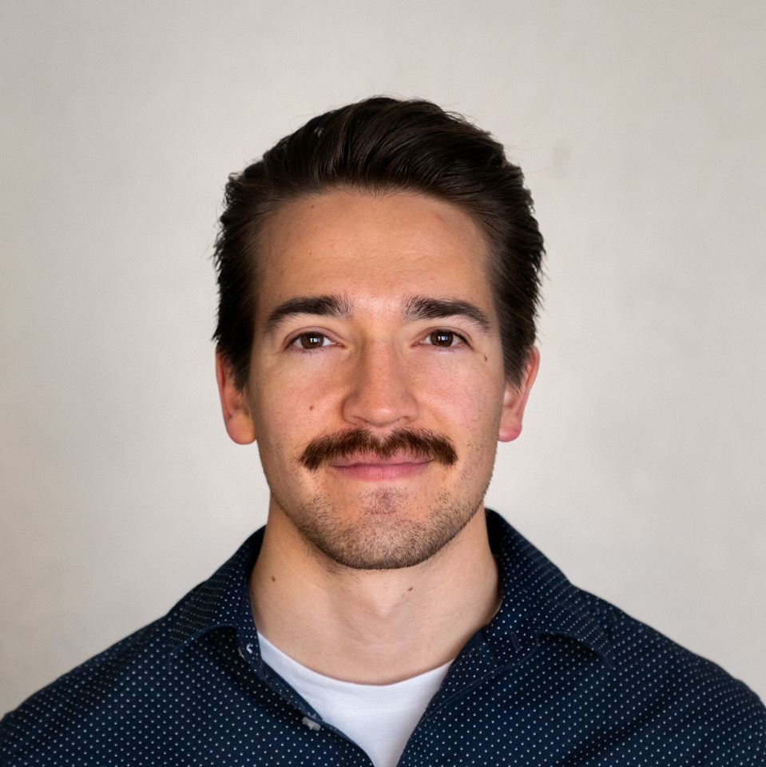
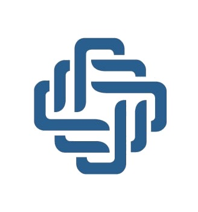
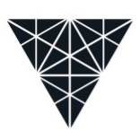
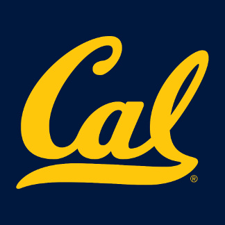

Travis Reed Mendoza
I build autonomous systems and deploy them in the physical world 🤖 🛰️ 🌊
2024 –

Founding engineer at EyeZense, a stealth startup in Silicon Valley building IoT + AI systems to protect critical infrastructure. I contributed to our $15M seed round by authoring pitch decks and building live demos that secured the raise. I lead end-to-end development of our mobile robots: C++ firmware, ROS 2 architecture in Python, and sourcing hardware for mobility and multi-modal sensing (vision, audio, chemical).
2023 – 2025
AI-powered full-stack mobile app developer. I created a promptless virtual assistant using Swift/SwiftUI with a Django backend. In hindsight, it was an early "LLM wrapper," built before the term became popular in the wake of tools like Cursor. We never released it, but the project was a personal masterclass in wiring LLMs into user interfaces.
2022 – 2024

Test engineer at Skyloom, working on the future of space communications. I planned and executed tests for optical control systems, building physical testbeds and Python automation to validate prototypes. Passing these tests unlocked milestone payments from government and commercial partners, and the same results powered customer demos that helped move contracts forward.
2020 – 2021

MS in Mechanical Engineering at UC Berkeley. GEM Fellow. Two summer internships at The Aerospace Corporation. My thesis explored design concepts for a Position, Navigation, and Timing service for the Earth–Moon corridor, essentially a GPS architecture for future lunar missions.
2016 – 2019
Owner's Engineer at Surf Cove, a small company dedicated to creating perfect surf destinations. I designed, built, and tested prototype wave-generating machines similar in spirit to Kelly Slater's Surf Ranch. I moved to Mexico and became fluent in Spanish in preparation to install a surf machine, but the project stalled due to budget volatility.
2012 – 2016

BS in Mechanical Engineering at the University of Southern California. Two summer internships at NASA, where I created designs and prototypes of the docking mechanism for Astrobee, the free-flying robot aboard the International Space Station. I worked the docking interface from both sides (the robot side and the dock side) to enable fully autonomous docking and recharging in microgravity.
handiwork
Check out my public handiwork and software at travisreedmendoza.com and GitHub respectively
headspace
These quotes get me fired up, check them out
I occasionally share takeaways from books I read in my book blog
friends
- TATEM - Corporate finance platform for Mexico
- High Degree - Agricultural steam machines
- Bet Think - Sports betting AI platform
causes
- DKMS and Gift of Life are stem cell and bone marrow registries. I had a positive experience donating bone marrow through DKMS
- I frequently donate blood plasma to the Red Cross and Stanford Blood Center
- Wikipedia
- Khan Academy
- La Peñita's COVID-19 economic relief project (no longer active)